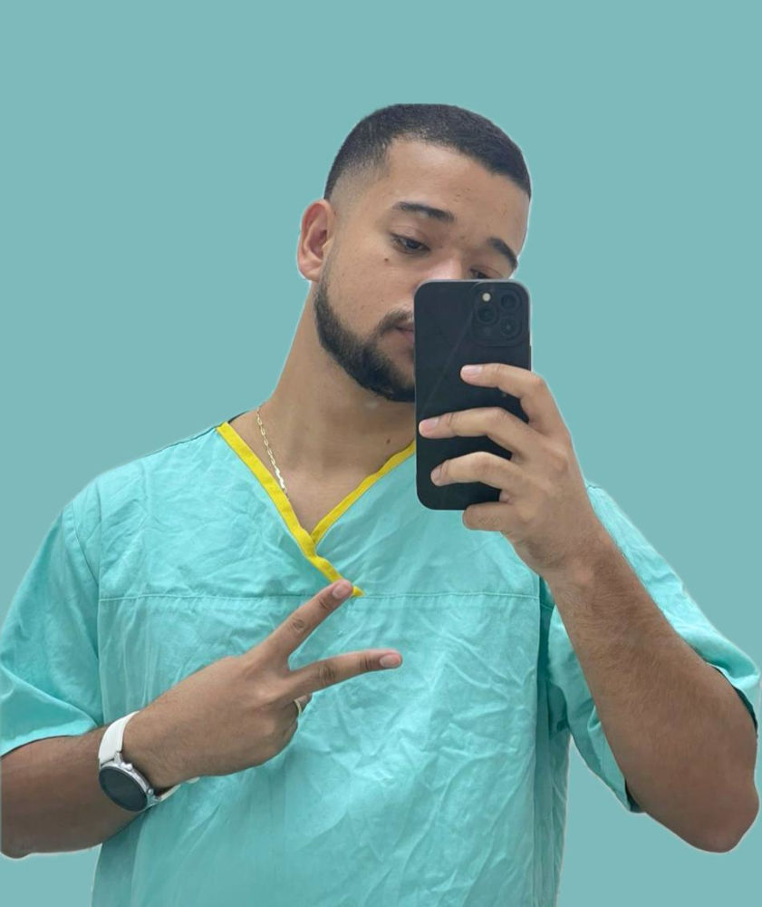
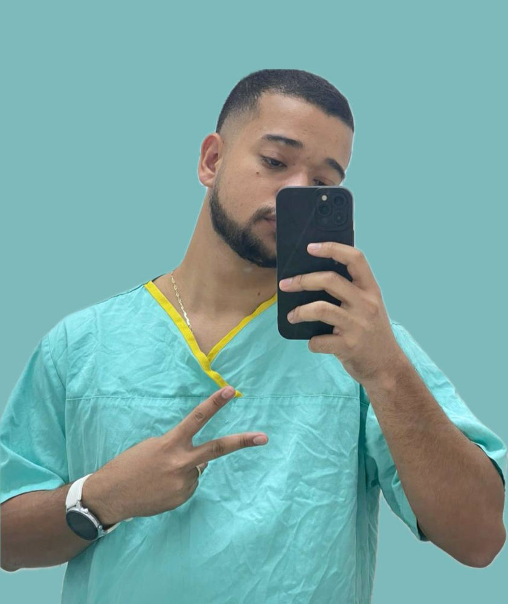

Formação Acadêmica
Minha primeira formação foi em Psicologia, profissão que exerço há quatro anos com muito orgulho, atualmente na area clínica e hospitalar.Além disso, também sou licenciado em História. Deu para perceber a diversidade de interesses, né?
 

Em 2025, decidi mergulhar de cabeça na área da tecnologia, um grande sonho que agora virou realidade. Atualmente, curso o primeiro ano de Análise e Desenvolvimento de Sistemas pela UNINTER, animado com os novos desafios e surpresas desse universo.
Idiomas
- Português – nativo
- Inglês – intermediário
- Espanhol – básico